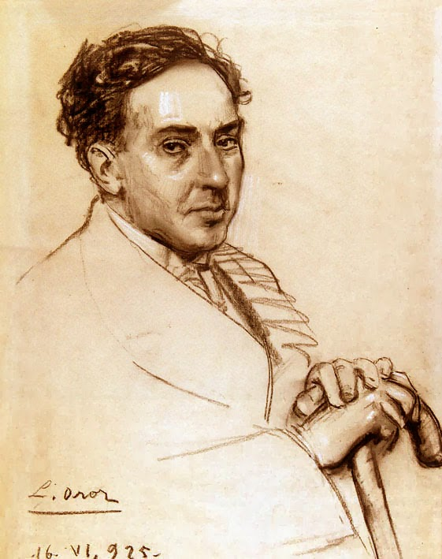
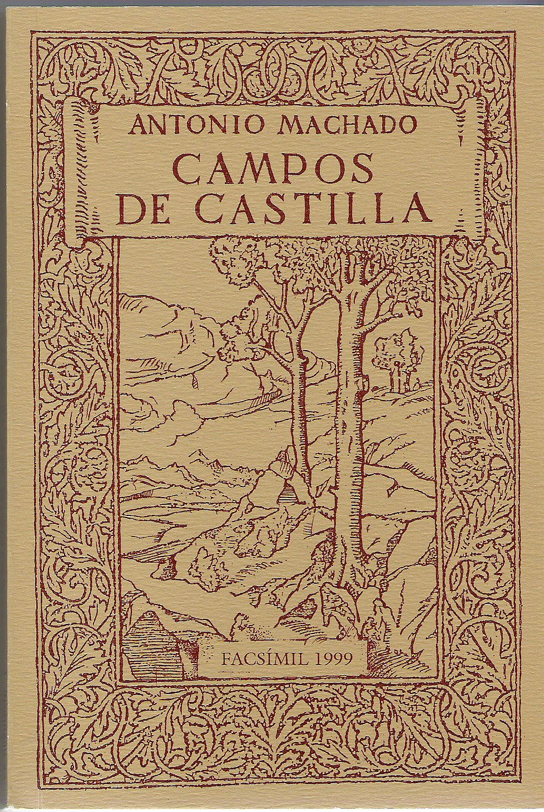

Antonio Machado

Libros:
Campos de Castilla

Poemas:
Al olmo viejo, hendido por el rayo
Cantautor/a:
Joan Manuel Serrat
A José María Palacio
Poema recitado:
Retrato
Cantautor/a:
Joan Manuel Serrat
Del pasado efímero
Cantautor/a:
Joan Manuel Serrat
El mañana efímero
Poema recitado:
La Saeta
Cantautor/a:
Joan Manuel Serrat
Caminante no hay camino
Cantautor/a:
Joan Manuel Serrat
Soledades, galerías y otros poemas

Poemas:
Anoche cuando dormía...
Poema recitado: